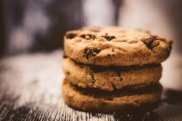

Cookies

These are my secret family recipe chocolate chip cookies. My caretaker would
bake these a lot for me and my siblings growing up. I learned the recipe and
would then mainly just eat the dough. It was tastier and less work to eat the
raw dough.
Ingredients
- (125 g) 0.5 cups of sugar
- (125 g) 0.5 cups of brown sugar
- (250 g) 1 cups of room temp butter
- 1 egg (optional)
- (125 g) 0.5 cups of chocolate chips
- (500 g) 2 cups of flour
Steps
- Add the sugar to the butter, mix until creamed.
- (Optional) add egg and mix.
- Mix in flour slowly.
- Mix in the chocolate chips.
- Scoop ball of the dough onto a pan. The balls should be the same diameter
as a spoon you'd use to eat soup.
- Bake at 350 F for 12 mins.
Makes about 24 cookies. Be sure to share them or you will get type
2 diabetes.
Back